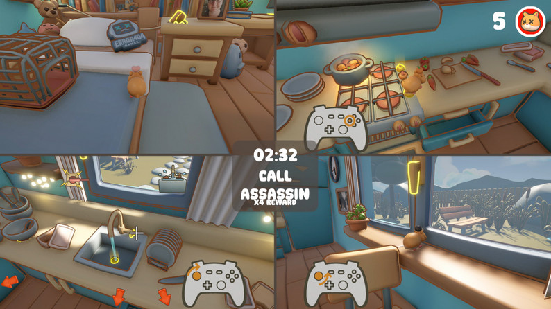
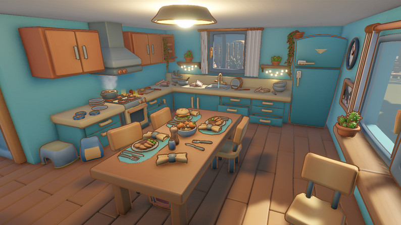
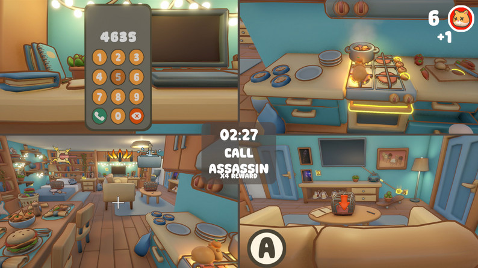
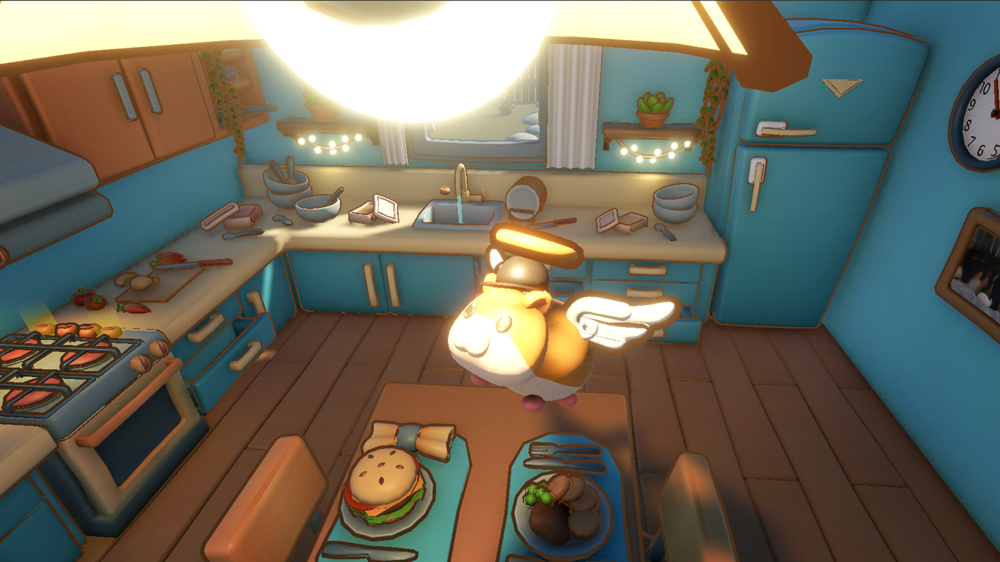
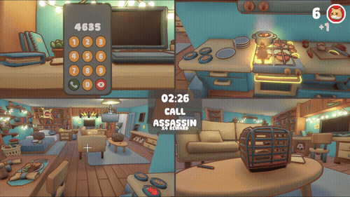
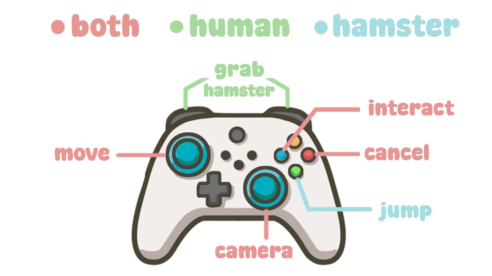

Team game · Unity · C#
MayHamster
A fun 3D co-op and versus hamster game for 4 players. Built with a team of 6 students, for the game projects course at Howest DAE.
- Team
- 6 students
- Engine
- Unity
- Language
- C#
- Duration
- 12 weeks
- Platform
- Windows, gamepad
- My role
- Gameplay programmer
About the project
MayHamster is a chaotic couch co-op game where three hamster players try to kill themselves and the fourth person, who plays as their human owner, tries to save them. Be the best human owner or annoy your friends by offing yourself in the most creative ways!
My part
- Hamster drowning
- Hamster electrocution
- Hamster assassination
- The interaction system
- Player feedback UI
- Parts of the gameplay loop
Screenshots






Challenges and what I learned
Since this was a team project it was important to communicate and make sure all the code I write is usable by the other team members. Working with Perforce and HacknPlan was a struggle in the beginning, but it helped improve our workflow and was worth the time investment.